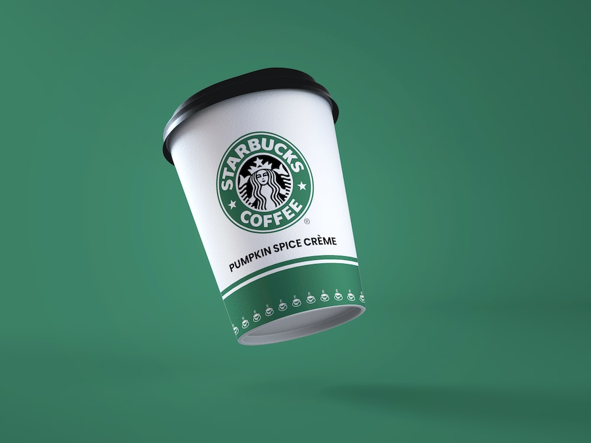

Sejarah Starbucks
Starbucks didirikan pada tahun 1971 di Pike Place Market, Seattle, oleh tiga orang sahabat: Jerry Baldwin, Zev Siegl, dan Gordon Bowker. Awalnya, Starbucks hanya menjual biji kopi panggang berkualitas tinggi. Pada tahun 1987, Howard Schultz mengambil alih dan mengubah Starbucks menjadi jaringan kedai kopi global. Kini, Starbucks memiliki lebih dari 35.000 gerai di lebih dari 80 negara, menjadikannya salah satu brand kopi terbesar di dunia.
Fun Facts tentang Starbucks
- Nama Starbucks terinspirasi dari karakter Starbuck dalam novel "Moby-Dick".
- Logo Starbucks menggambarkan siren (putri duyung) dari mitologi Yunani.
- Starbucks memiliki lebih dari 170.000 kombinasi minuman yang bisa Anda kustomisasi!
- Gerai pertama Starbucks di Pike Place Market, Seattle, masih beroperasi hingga kini.
- Program loyalitas Starbucks Rewards memiliki jutaan anggota di seluruh dunia.